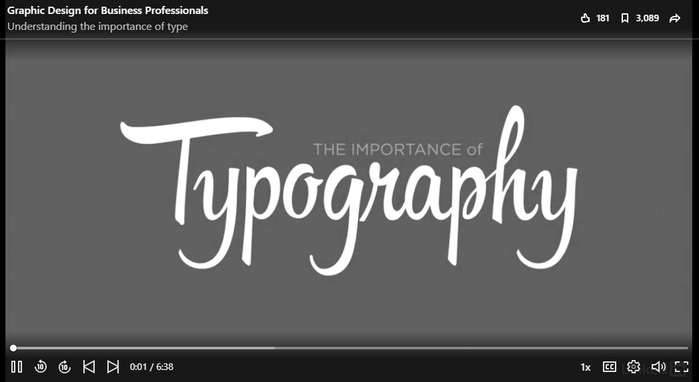

There are thousands of fonts that you can choose for your projects, like Arial, Impact, Times New Roman, and WingDings. The challenge is knowing when a particular font is a good choice. The Google Font Dokdo, shown on the right, would be a poor choice for most technical writing. It’s irregular and overall unprofessional. While the case for Dokdo is fairly obvious, other fonts make the decision much harder.
Watch the LinkedIn Learning video on Understanding the importance of type for tips on how to choose and combine fonts in your work. The video also shares tips on manipulating the space between letters and lines in your work.

After you watch the video, write a reply that identifies the fonts that you are using in your poster and how the information from the video relates to their appropriateness for your project. Include a screenshot that shows the fonts, since you cannot use them in your reply. After you write your reply, review some of the fonts used by others in the course and offer feedback.